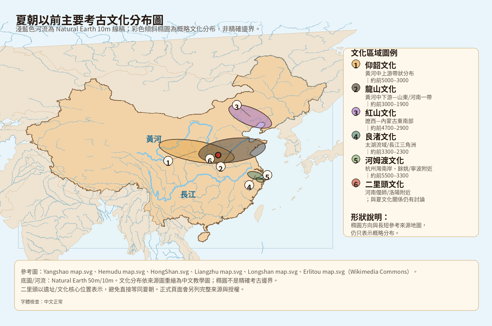
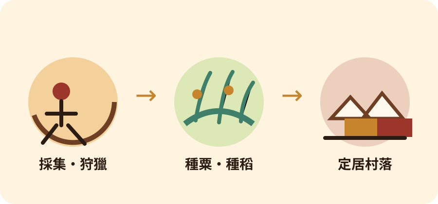
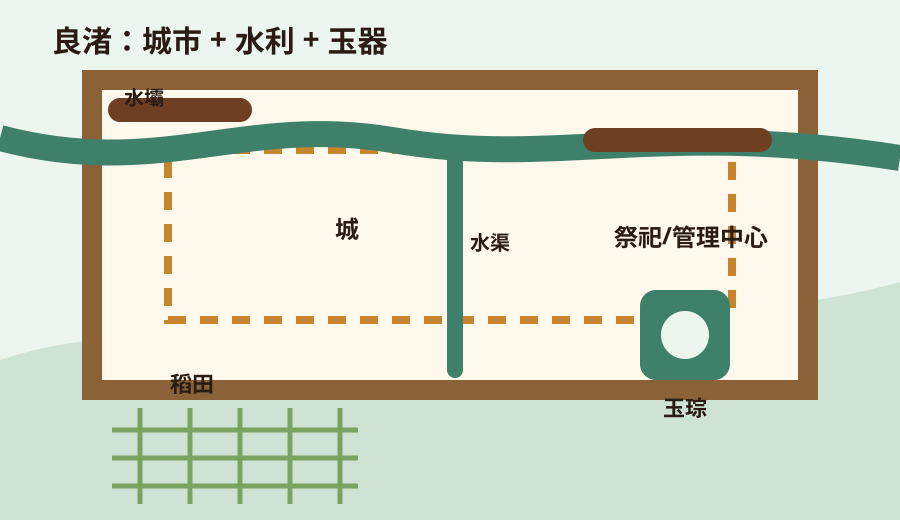
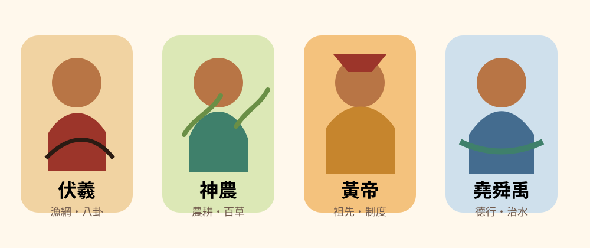
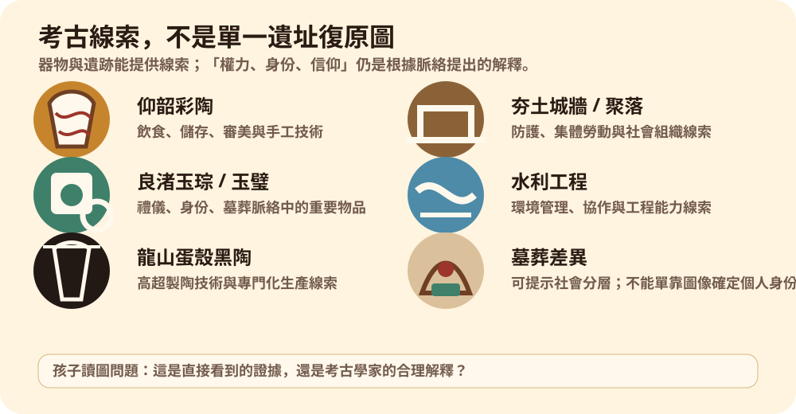

很早以前–約前2000
夏朝以前：史前文化與傳說時代
從採集狩獵到農耕村落，再到城牆、水利、玉器、祭祀和早期中心聚落。仰韶、河姆渡、紅山、良渚、龍山等考古文化，幫我們理解早期文明如何慢慢形成。
- 重點：黃河與長江流域都很重要。
- 小心：三皇五帝和大禹故事有文化記憶，但不能直接當成考古事實。
給 10–12 歲孩子閱讀
從夏朝以前開始，一路看到現代中國。先用可點擊時間線掌握朝代順序，再點進每個時代，看看它的重要人物、制度、文化和需要小心分辨的歷史問題。

可點擊時間線
這是較清楚的朝代主線：三國、晉、南北朝分開顯示；五代十國與宋分開顯示，遼、西夏、金作為平行政權放在第二行。每一段橫條的寬度按大約年份長度顯示；時間線可左右滑動，點選任何時段可以跳到下方簡介。
點進時代
這裡先給孩子能掌握的「大圖像」。之後可以把每一格擴充成獨立頁面、地圖或插圖故事。
很早以前–約前2000
從採集狩獵到農耕村落，再到城牆、水利、玉器、祭祀和早期中心聚落。仰韶、河姆渡、紅山、良渚、龍山等考古文化，幫我們理解早期文明如何慢慢形成。
約前2000–前1600
你說得對，夏以前和夏商之間應該看到青銅時代的轉折。二里頭文化常被視為中國早期青銅文明和早期國家形成的重要例子，出現大型宮殿區、道路、作坊和青銅禮器。
約前2070–前1600
傳統史書把夏視為中國第一個世襲王朝，常與大禹治水、啟建立家天下相連。考古上，河南二里頭文化常被拿來討論是否與夏有關，但學界仍保持謹慎。
約前1600–前1046
商代留下甲骨文，是目前能系統閱讀的早期漢字資料之一。殷墟出土的青銅器、王陵、祭祀和占卜材料，讓我們更清楚看到早期國家的權力與信仰。
前1046–前256
西周建立封建與禮樂秩序；東周時王室衰弱，進入春秋、戰國。各國競爭激烈，政治、軍事和思想快速變化，孔子、老子、墨子、孟子、荀子、韓非等思想家相繼出現。
前221–前206
秦始皇統一六國，推行郡縣制，統一文字、度量衡和車軌，修築道路與長城系統。秦朝時間很短，但很多制度影響後來兩千多年。
前202–220
漢朝分西漢、東漢，中間有王莽新朝。漢武帝時國力強盛，對外交流擴大，絲綢之路逐漸形成；儒學成為重要政治思想來源。
220–280
東漢滅亡後，中國進入魏、蜀、吳三國對峙。這是一個軍事、人才和地方政權競爭激烈的時代，也因《三國演義》而非常有名。
266–420
西晉曾短暫統一三國，但很快因內亂和北方動盪而崩潰。之後東晉在南方延續，北方則進入多個政權並立的局面。
420–589
南方和北方長期由不同政權統治。雖然政治分裂，但佛教藝術、民族融合、制度改革和文學書法都有重要發展。
581–618
隋朝結束長期分裂，重新統一南北。它修建大運河、推動科舉制度，但也因大型工程和戰爭耗費過重而迅速滅亡。
618–907
唐代長安是國際大城市，與中亞、朝鮮半島、日本、東南亞等地交流密切。唐詩、制度、佛教藝術和多元文化都很有代表性。
907–960
唐朝滅亡後，北方短期政權更替很快，南方也有多個地方政權。這段時間雖短，但它承接唐末動盪，也鋪向宋朝重新整合。
960–1279
宋分北宋與南宋，重視文官制度、科舉和城市經濟。印刷、指南針、火藥應用、商業和教育都很活躍。
916–1125
遼由契丹人建立，控制中國北方部分地區和草原地帶，與北宋長期並立。它是理解宋代國際格局的重要政權。
1038–1227
西夏由黨項人建立，位於今天寧夏、甘肅一帶及周邊地區，與宋、遼、金都有互動和衝突。
1115–1234
金由女真人建立，滅遼並攻破北宋都城，迫使宋室南渡，形成南宋與金南北對峙的局面。
1271–1368
忽必烈建立元朝，把中國納入蒙古帝國的巨大交通網絡之中。元代有多民族統治結構，也促進了東西方旅行、貿易和文化接觸。
1368–1644
明朝建立後強化皇權，修建北京紫禁城，鄭和下西洋展示海上力量。中後期商業、白銀流通和城市文化發展，同時也面對倭寇、邊防和財政問題。
1636/1644–1912
清由滿洲政權入主中原，疆域廣大，治理滿、漢、蒙古、藏、維吾爾等多族群社會。晚清面對西方列強、鴉片戰爭、太平天國、洋務運動、戊戌變法和辛亥革命。
1912–1949
辛亥革命後，兩千多年的皇帝制度結束。民國初年有共和制度嘗試，也經歷軍閥割據、北伐、南京國民政府、抗日戰爭和國共內戰。
1949–今天
1949年中華人民共和國成立。之後經歷土地改革、計劃經濟、社會運動、改革開放、城市化、科技發展與全球化。現代史仍在延續，閱讀時要注意不同來源和觀點。
先看位置
這是依參考地圖重繪的中文概略學習圖，不是精確考古邊界圖。重點是看出：黃河、長江兩大流域都很重要。
地圖參考 Wikimedia Commons 相關考古文化圖重繪；底圖與河流使用 Natural Earth。橢圓為概略分布，不代表精確邊界。
生活改變
農耕讓人更容易定居；黃河流域常見粟、黍等旱作，長江流域很早有稻作。定居後，陶器、房屋、倉儲、分工也慢慢發展。

考古文化卡
彩陶、村落、粟作農業。
稻作、木構建築、水鄉生活。
玉器、祭祀、身份象徵。
城市、水利、玉器、社會組織。
黑陶、城牆、貧富差異。
宮殿、道路、作坊、青銅器；是否等同夏朝仍有討論。
重點案例
大型水利和城市需要很多人協作，也可能需要管理者、工匠和清楚分工。下圖是簡化概念圖，不是遺址平面圖。

傳說符號
這些人物不應直接當成確定史實；圖像改用符號表示故事主題，不畫人物肖像；這不是歷史肖像或服飾復原。

怎樣讀歷史
孩子可以問：這件物品說明了什麼？還有哪些地方不能確定？下圖是線索分類，不是單一遺址復原圖。

農耕、村落、手工業、信仰和城市累積了幾千年。
中國早期文明不是單一地點突然出現。
把故事和考古證據放在一起看，才更接近歷史。